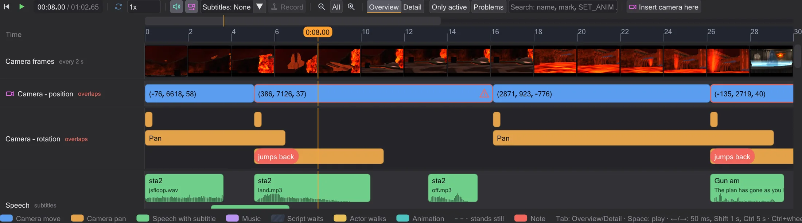
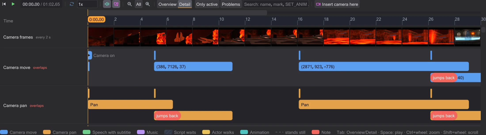
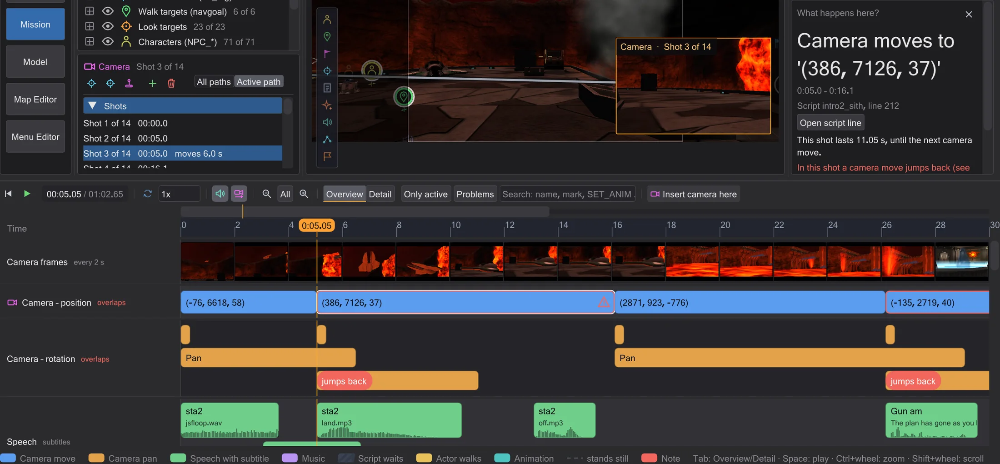
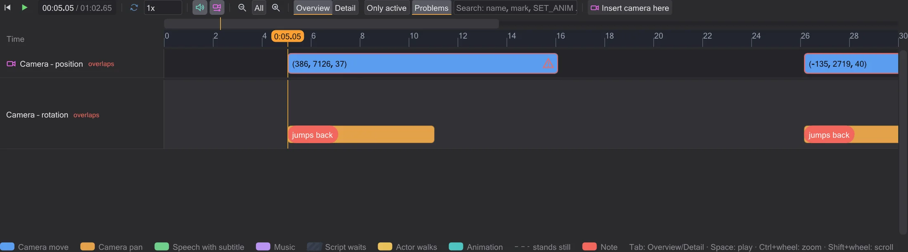
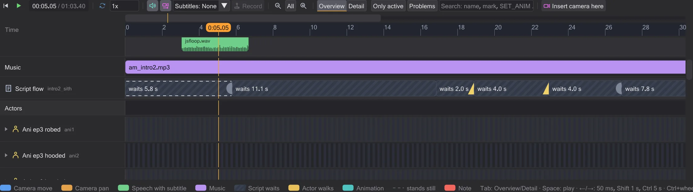

Timeline
The timeline plays the scene and shows when everything happens - camera shots with names, speech with subtitles, music, the script's waits and every actor. Click a block and the side bar explains it; drag it and the script changes.

Playing and moving around#
The play button (▶) under the map starts and stops; with the mouse over the timeline Space does the same. Click or drag on the ruler to set the time - the 3D view shows the scene at that moment. Left / Right move by one game frame (50 ms, the grid of the game logic), with Shift by one second, with Ctrl by five seconds, Home jumps to the start. The legend under the rows lists these keys. The speed field slows the scene down (sound only plays at 1x), Loop repeats it.
A scene starts with a section of about 30 seconds. All shows the whole scene, − and + zoom out and in, Ctrl+wheel zooms around the mouse pointer, Shift+wheel scrolls. Only while zoomed in, a slim navigation bar above the ruler shows which part of the scene you see - click or drag it to move there.
Sound like in the game#
The preview plays the scene's sounds the way the game does. You hear from the camera the view shows - the cutscene camera while playing. Every sound is updated every frame: move the camera away and it fades, cut to another place and what is there becomes audible. A voice line that started out of range keeps running silently. Like the game, only sources the camera could see (its PVS) make sabers hum, speakers loop, doors and effects sound; voices, ROFF note sounds and breaking objects are always heard. An invisible NPC does not ignite its saber audibly - the ignition sound comes when it appears. The levels follow the game's defaults (effects 0.5, voices 1.0, music 0.25) and can be changed under Edit → Prefs. Sound only plays at 1x speed.
sound note on a figure stays where it started under Movie Duels rules and moves with the figure under OpenJK rules (Preferences). Under OpenJK rules every note of a ROFF frame fires (Movie Duels and Jedi Outcast fire only the first), and loop sfx <sound> gives the entity a looping sound until loop sfx kill; a USE <script> note starts that script on the entity, and loop rof absolute|relative restarts the path like the game (the task of the play never finishes, so a dowait on it waits forever).Overview and Detail#
Overview shows the scene at a glance: Camera – position has one block per shot, from one camera move to the next, named after its mark (or as readable coordinates); Camera – rotation shows the pans, a pan without duration is marked as a cut. Speech shows every line as long as its sound file, with speaker, subtitle from the game's string files and the waveform. Music shows which music plays from when. Script flow shows the waits of the script as hatched blocks with what they wait for, and its commands as labelled marks; a map change is a red mark. Each actor has one row: meaningful animations with their names on top, its walks numbered below, a dashed line where it stands still, hatched where it is not visible. The arrow at the name opens its Animation and Commands.

Detail (or Tab over the timeline) splits the camera into move, pan, zoom and fade and draws the field of view and the fade as lines. They are straight between two commands because the game interpolates them linearly - there are no ease curves. If a camera move starts before the previous one of the same kind has finished, it gets a lane of its own and the red note jumps back: the game only takes over position and angle at the end of a move (cg_camera.cpp), so the new move starts from where the previous one began - the camera jumps back.
What happens here?#

Click any block or mark: the time jumps there, its line is selected in the script, and below the script column the box What happens here? says in plain words what it does - where the camera moves and how long, who speaks which line, what a wait waits for and who sends that signal, which animation plays for how long. Open script line opens the command in the editor. A command that comes from another script names that script; one the simulation inserted has no line.
Filters and search#
Only active hides actors that do nothing in the visible section. Problems shows only places with notes: camera moves that jump back, commands the preview does not simulate yet, the map change. The search field filters by name, mark, file, subtitle or command (for example luke, cam1b, SET_ANIM).

Changing time by dragging#
Drag a camera block or a line left or right: the wait before it changes, so it happens earlier or later and everything after it moves along; with Alt the wait after it gets shorter by the same amount and the rest stays. Drag the right edge of a camera block to change its duration, the right edge of a wait to make it longer or shorter. A line keeps its length - it is the length of the sound file. A walk cannot be made longer or shorter: its duration comes from the path finding and the speed of the figure. Everything snaps to the game's 50 ms frames, and while you drag a note says what changes in the script.

Every drag writes the value into the script (comments and formatting stay) and is exactly one step for Ctrl+Z - afterwards the script is byte for byte what it was.
wait ends one game frame (50 ms) later than written, and a dowait waits for the task it names. A command the preview does not simulate yet (for example camera ( TRACK ) or print) is shown as a red mark instead of being guessed. The rules of OpenJK or Movie Duels apply as set in Preferences.